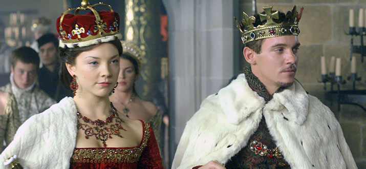
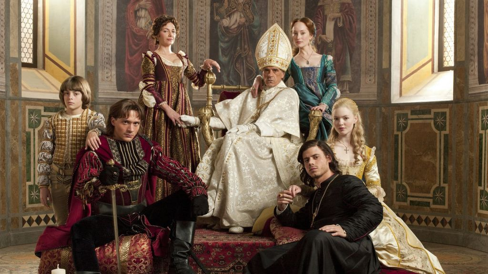
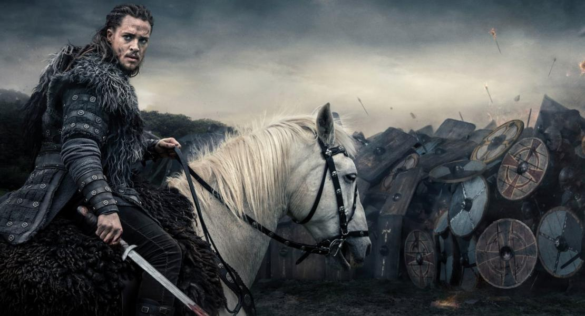

Переглянуті мною під час війни серіали
1. Гра престолів
Моя оцінка: 9 з 10 (за поганий, на мою думку, кінець)
Вперше на екрани вийшов 17 квітня 2011 року серіал "Гра престолів". Жанр спочатку був визначений як фентезі,
як і романи, з яких був запозичений сюжет.
Дія фільму розгортається у вигаданому світі, який віддалено
нагадує Середньовіччя. Пори року тут тривають по кілька років. Сюжет починається в той момент, коли добігає
кінця дуже довге літо.
Серіал одночасно розповідає про долю кількох персонажів, з кожним з яких пов
'язана своя сюжетна лінія. Одна з них розповідає про боротьбу за трон кількох знатних сімей. Друга - про
стародавній ордена, що охороняє на півночі Стіну, через яку може прийти надприродний ворог. Третя - історія
принцеси-вигнанки, яка бажає повернути собі Залізний Трон.
2. Карнівал Роу
Моя оцінка: 7 з 10
Історія серіалу «Карнівал Роу» розгортається у вигаданому місті Бюрзі – місці, аж надто схожому на
вікторіанський Лондон з каретами на вулицях та капелюхами-котелками на голові. Серед простих двоногих людей
без особливих магічних здібностей живуть чарівні істоти – лепрекони, феї, вампіри тощо. Як часто буває в
реальному світі, вони змушені були залишити власні будинки та Батьківщину через війну. І тепер навчаються
жити серед людей, де расизм та ксенофобія продовжує жити та процвітати.
Брюгге вражає новина – на вулицях
було вбито фею-танцівницю. За розслідування справи береться детектив Райкрофт Філострейт (Орландо Блум),
який кидається на пошуки головного підозрюваного коханця феї з раси вампірів. Ось тільки походу
розслідування детектив починає замислюватися, а чи не завівся на вулицях хворий маніяк з відкритою
неприязнью до чарівних створінь та біженців. З'ясовувати правду Райкрофт належить з раптовою напарницею і
любовним інтересом у вигляді феї Віньєтт Стоунмосс (Кара Делевінь). І все на тлі розпалу пристрастей між
людьми та казковими створіннями.
3. Тюдори
Моя оцінка: 8 з 10
Дія охоплює період правління Генріха VIII. Роль амбітного імператора блискуче виконує Джонатан Різ Майєрс. «Тюдори» – це захоплююча та багато в чому правдива розповідь про представників знаменитого роду. Хитромудрі інтриги, підступні змови, запаморочливі романи, великі плани, нищівні поразки, дружба до труни та смертельна зрада, блиск і злидні – все це і багато іншого є в «Тюдорах».
4. Борджиа
Моя оцінка: 9 з 10
Дія серіалу відбувається на рубежі XVI століття і розповідає про знамените сімейство Борджіа, яке досягло вершин влади в Італії під час Відродження. У головних ролях знялися Джеремі Айронс (папа Олександр VI), Франсуа Арно (Чезаре), Холлідей Грейнджер (Лукреція), Девід Оукс (Хуан) та Ейдан Олександр (Джоффре).
5. Останнє королівство
Оцінку поки що дати не можу, бо все ще дивлюся
Сюжет розповідає про часи правління короля Вессекса Альфреда Великого, який зумів відвоювати англійські землі у датських вікінгів – заморських загарбників. Головним героєм оповідання виступає ще в дитинстві викрадений даними Утред - нащадок благородного саксонського роду. Вихований як вікінг, у дуже непростий момент життєвого вибору молодий воїн повинен буде вирішити для себе, чию сторону він прийме у вирішальних битвах за долю стародавньої Британії.
